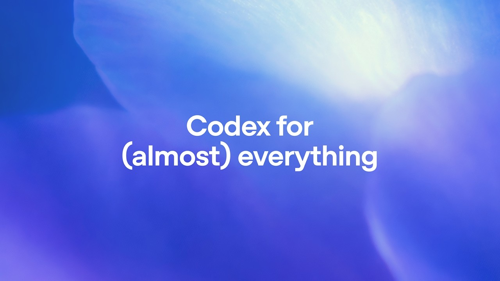

Videos

Codex for (almost) everything
See the latest Codex app updates for working across more of the software development lifecycle.

Introducing the Codex app
See the Codex app in action and how it helps you build and ship faster.

Codex in JetBrains IDEs
How to use Codex inside JetBrains IDEs like Rider, IntelliJ, PyCharm, and WebStorm.

Codex code review
Walkthrough of how Codex drives end-to-end pull request reviews with the new onboarding flow.

Build beautiful frontends with OpenAI Codex
Learn how OpenAI Codex's multimodal abilities accelerate frontend development.
Building with Open Models
Talk covering how developers customize and deploy OpenAI’s open models.
Context Engineering & Coding Agents with Cursor
Session on structuring context for agent workflows inside the Cursor editor.
Live Demo Showcase: Tools That 10x Your Codebase
Live walkthrough of Codex-powered tooling that accelerates software delivery.
OpenAI Codex in your code editor
Walkthrough of the Codex IDE extension for VS Code, Cursor, and other forks.
Shipping with Codex
DevDay talk on building, testing, and delivering products with Codex.
Sora, ImageGen, and Codex: The Next Wave of Creative Production
Panel discussion on combining Sora, ImageGen, and Codex for media creation.
Using OpenAI Codex CLI with GPT-5-Codex
Overview of running the Codex CLI locally with GPT-5-Codex.
4o image generation intro
Video introduction to 4o model image generation capabilities.
Balance accuracy, latency, and cost
Talk on optimizing AI systems for accuracy, speed, and cost.
Build hour — agentic tool calling
Build hour giving an overview of agentic tool calling.
Build hour — built-in tools
Build hour giving an overview of built-in tools available in the Responses API.
Codex intro
Introductory video introducing Codex and its capabilities.
DevDay — distillation breakout
DevDay session on model distillation techniques.
DevDay — optimization breakout
DevDay session discussing optimization of models and prompts.
DevDay — realtime breakout
DevDay session focused on realtime agent capabilities.
DevDay — structured outputs breakout
Session covering structured outputs from DevDay.
Launch apps with evaluations
Video on incorporating evals when deploying AI products.
MCP intro
Introduction video to Model Customization Platform (MCP).
New audio models intro
Overview video of new audio models for speech and transcription.
Realtime agent demo
Video introduction to the TypeScript Agents SDK.
Responses API — tools and features
Overview video of available tools and capabilities in the Responses API.
Unlock agentic power — Agents SDK
Video demonstrating advanced capabilities of the Agents SDK.